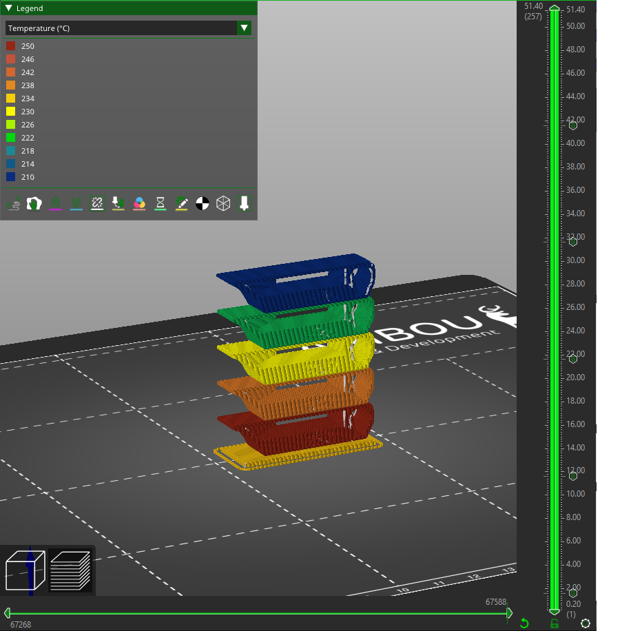
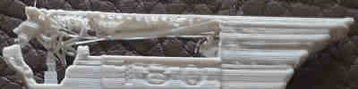
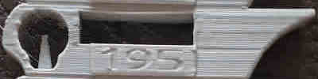
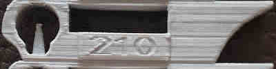
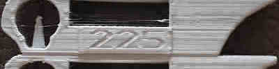
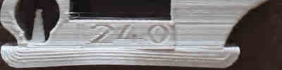

Kalibrierung der Filamenttemperatur |
|||
|
Diese Kalibrierung wird Ihnen dabei helfen Wählen Sie die richtige Temperatur im Hinblick auf Verklebungen, Überstände und Nässen. Beachten Sie, dass dieser Test ist abhängig von der gewählten Kühlung. Sie können dies mehrmals mit mehr oder weniger ausdrucken Abkühlen, um den Sweet Spot zu finden.
Bei diesem Test wird ein Turm gedruckt, der mit einer anderen Temperatureinstellung für jede Etage gedruckt wird. Sie sollten den Filamenttyp auswählen, bevor Sie den Turm erstellen. Die Basis wird gedruckt mit den Temperatureinstellungen das Filament formen. Das Erdgeschoss wird gedruckt mit der höchsten gewählten Temperatur. Die Temperatur wird um das gewählte Delta gesenkt für jede Etage.
|  | ||||||||||
|  | Zu kalt, es kann nicht extrudiert werden | |
|  | Gut | |
|  | Gut | |
|  | Zu heiß, man sieht etwas tropfendes Filament | |
|  | Zu heiß, man sieht tropfendes Filament |
Hier sehen Sie, dass der mit 210 Grad Celsius bedruckte Boden der heißeste ist, den wir drucken können ohne Zerfallsprobleme (bezüglich der Hitze; die schlechte Qualität der Bilder liegt daran). zu hoher Geschwindigkeit). Sie sollten versuchen, das Teil zu zerbrechen. Auf diesen Bildern ein Teil des 195 Gradboden wurde wegen fehlender Schichthaftung abgebrochen.
Schließlich möchten Sie den Turm auseinandernehmen, um zu sehen, ob die niedrigeren Temperaturen nachteilige Auswirkungen haben Auswirkungen auf den Schichtverbund. Es sollte nicht möglich sein, Schichten mit bloßen Händen auseinanderzureißen. Lässt sich ein Boden leicht auseinanderziehen, dann ist diese Bodentemperatur definitiv zu niedrig (oder Sie). zu stark gekühlt wurde, weil der Lüfter zu stark bläst), daher sollten Sie eine höhere wählen Temperatur oder versuchen Sie es erneut mit weniger Kühlung. Wenn Sie versuchen, eines zu zerbrechen, fassen Sie es nicht an an den Enden des Turms, aber auf dem getesteten Stockwerk und dem nächsten, so dass nur die Brücke übrig bleibt Lücken zwischen ihnen.
Bei schlechter Betthaftung ändern Sie die Temperatur in Ihrer Filamenteinstellung (Extruder -> andere Ebenen), dann speichern. Dann können Sie mit einem anderen einen neuen Turm generieren Temperaturbereich auch.
Die meisten Kalibrierungen müssen in der richtigen Reihenfolge durchgeführt werden. Dieses hier sollte Dritter sein.
Dieser Turm wurde mit dem 3D-Modell erstellt von gaaZolee erstellt mit der CC BY-SA 3.0-Lizenz.